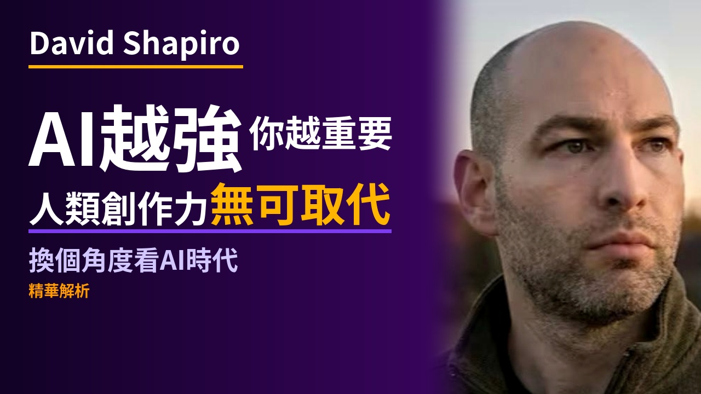
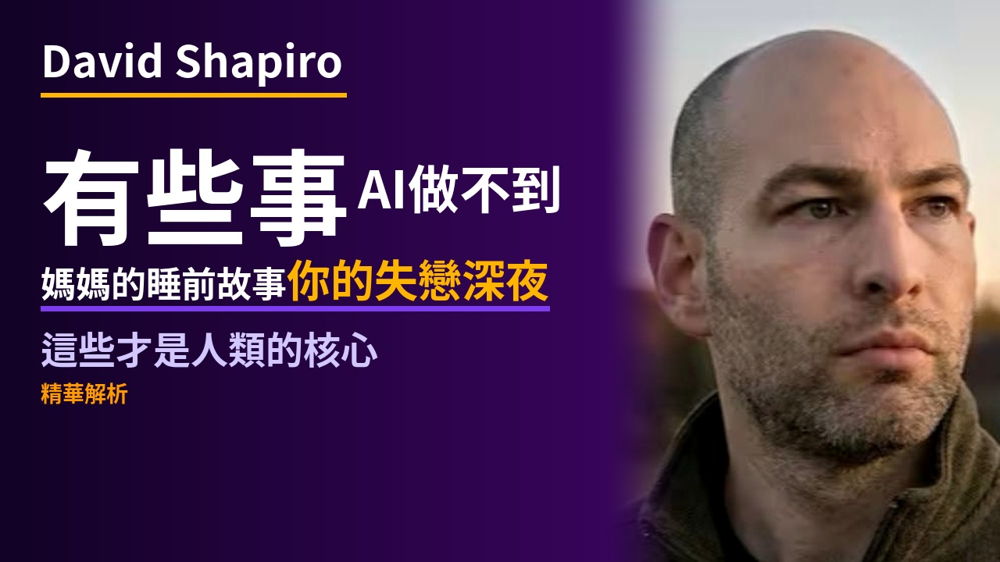
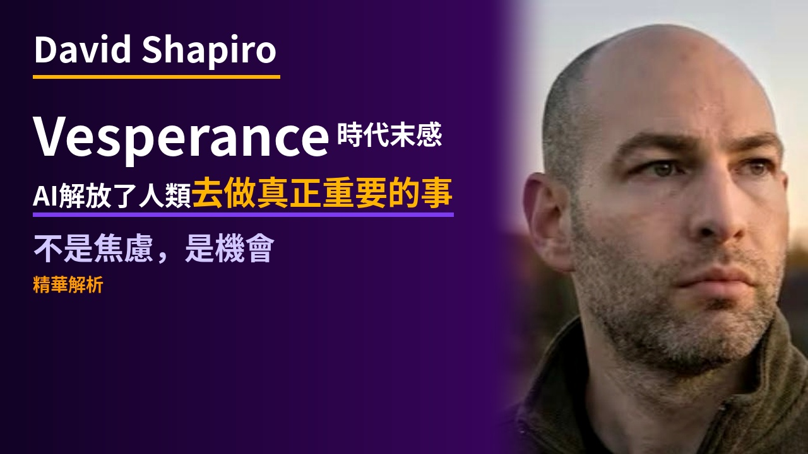

← Stage 索引更新：
94iVoice — david_shapiro 🎬 Stage 審閱中
🎬 Stage 審閱
請確認影片、封面、YouTube 文案，沒問題後告知「確認上傳」。
如需修改腳本 → 告知，重跑 TTS 後重建。如只改文案 → 直接說明。
請確認影片、封面、YouTube 文案，沒問題後告知「確認上傳」。
如需修改腳本 → 告知，重跑 TTS 後重建。如只改文案 → 直接說明。

🖼 YouTube 封面提案
三版封面設計供參考，回覆選擇 A / B / C
提案 A

提案 B

提案 C

🎬 Stage 影片
✍️ 中文腳本
載入中...
🔊 TTS 發音稿
載入中...
💬 SRT 字幕預覽
載入中...
📦 素材檔案
{kind=link}
{kind=link}
📋 YouTube 發布設定
▶
YouTube 文案
🔒 未上傳（私人）94iVoice｜AI 越強，人類剩下的才是核心｜David Shapiro
網路上不缺乏販賣 AI 焦慮的影片，但 David Shapiro 這支影片讓我們深入思考：為什麼當 AI 越來越強，人類剩下的，反而才是真正的核心。
David Shapiro 是 AI 研究者與科幻作家，他用「Vesperance」這個詞，描述我們對這個時代的感受——知道某段時代即將結束，卻仍身在其中，那種既懷念又無奈的情緒。
本片重點：AI 的超指數成長 vs 人類獨有的創作力、情感、在地文化語感，以及新時代如何把時間還給我們去做真正有意義的事。
━━━━━━━━━━━━━━━━━━━━━━━━━━━━
📌 章節
0:00 開場
0:30 什麼是 Vesperance
2:08 AI 的超指數成長
2:56 人類獨有的創作力
4:13 新時代的機會
5:39 結語
━━━━━━━━━━━━━━━━━━━━━━━━━━━━
🔔 喜歡這類內容？訂閱頻道，每週陪你聽懂 AI 時代的關鍵觀點。
🎙 Spotify Podcast 發布設定
🎵
Spotify Podcast 文案
Spotify封面未生成
94iVoice｜AI 越強，人類剩下的才是核心｜David Shapiro
⬇ 音訊 MP3 (160kbps)（未生成）
⬇ 封面 1400×1400（未生成）
網路上不缺乏販賣 AI 焦慮的影片，但 David Shapiro 這支影片讓我們深入思考：為什麼當 AI 越來越強，人類剩下的，反而才是真正的核心。
David Shapiro 是 AI 研究者與科幻作家，他用「Vesperance」這個詞，描述我們對這個時代的感受——知道某段時代即將結束，卻仍身在其中，那種既懷念又無奈的情緒。
本片重點：AI 的超指數成長 vs 人類獨有的創作力、情感、在地文化語感，以及新時代如何把時間還給我們去做真正有意義的事。
━━━━━━━━━━━━━━━━━━━━━━━━━━━━
📌 章節
━━━━━━━━━━━━━━━━━━━━━━━━━━━━
🔔 喜歡這類內容？訂閱頻道，每週陪你聽懂 AI 時代的關鍵觀點。
📋 Spotify 規格：音訊 MP3 · 96–320kbps · 封面 JPEG 1400×1400px（正方形）· 影片 MP4/MOV 1080p H.264（選填）